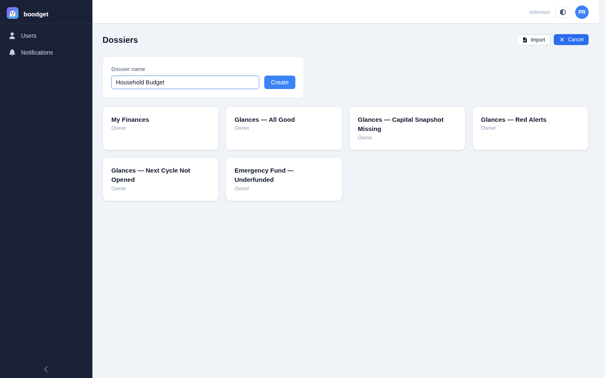
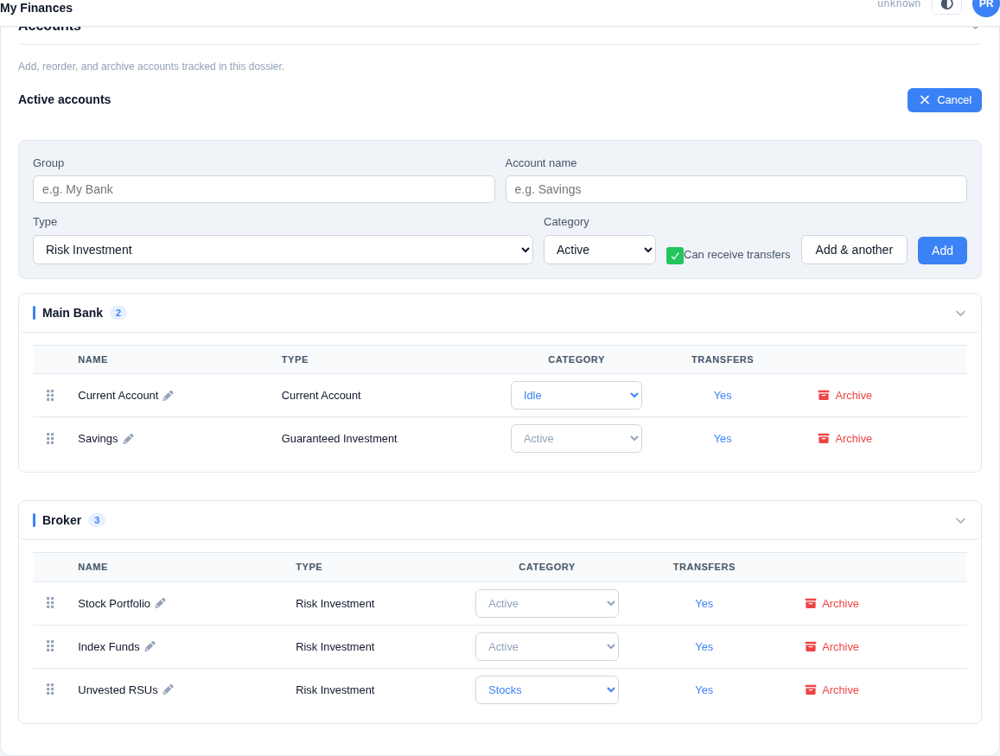
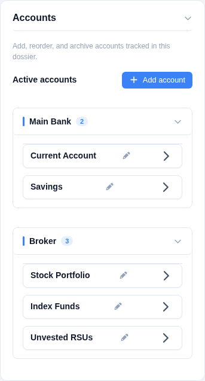
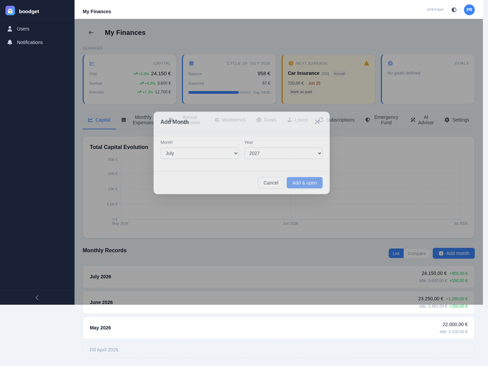
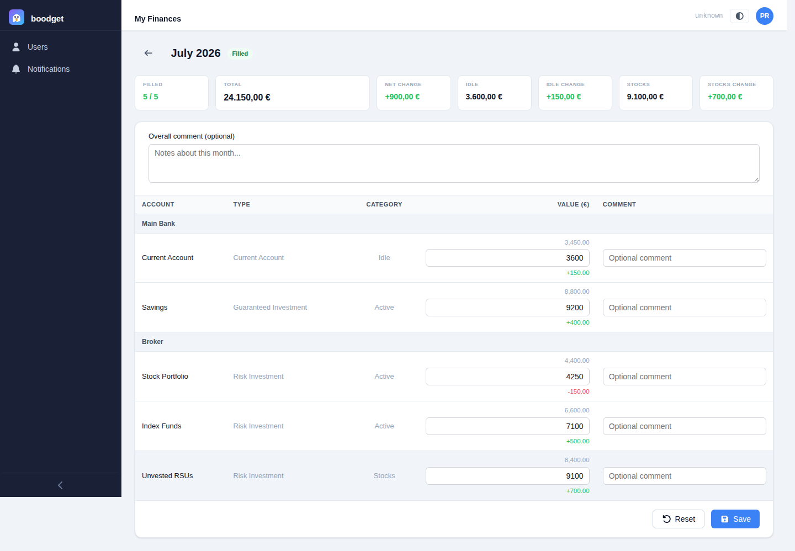
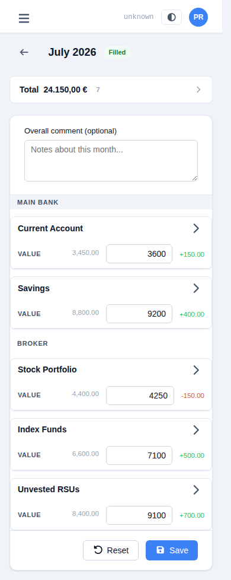
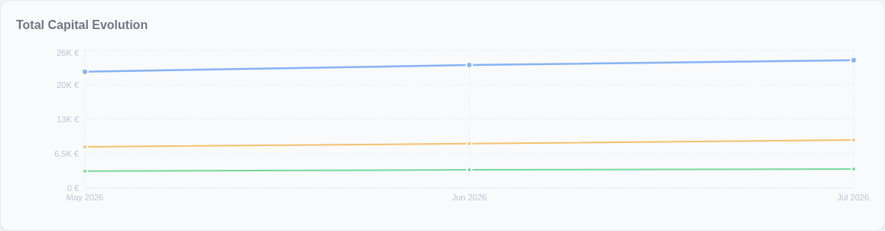
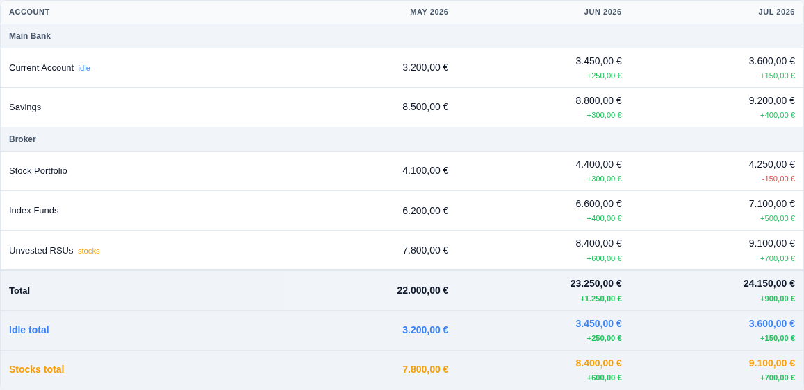
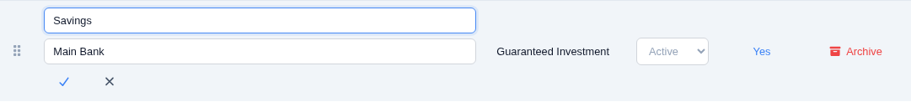

Tracking your Capital
The Capital section is where boodget answers "is my net worth going up or down?" — a monthly snapshot of every account you track, charted over time. This page walks through setting it up and reading it, step by step.
On first launch, boodget detects that no users exist and shows a setup wizard to create the first account. After that, every session starts at the login screen (username + password, or your organization's SSO if OIDC is configured).
Everything in boodget lives inside a dossier — a named container for a set of accounts, monthly snapshots, and expense cycles. Most people only need one; some split "Personal" and "Work Savings," or share one with a partner. From the dossier list, click New Dossier, give it a name, and open it.

Before recording any values, tell boodget which accounts you want to track — a current account, a savings account, an investment fund. Accounts are managed from the dossier's Settings tab, under the "Accounts" section. Each account has:
- Group — clusters accounts together, typically by bank or provider (e.g. "Chase," "Vanguard"). Purely for display; groups aren't a separate entity you manage elsewhere.
- Name — the account's label within its group (e.g. "Checking," "Index Fund").
- Type —
Risk Investment,Guaranteed Investment, orCurrent Account. Not editable after the account is created. - Money category —
Idle(cash-like, readily available),Active(invested, the default), orStocks(unvested/illiquid holdings — kept out of your headline Capital figure until they vest). - Can receive transfers — whether this account is eligible to be picked later as a budget distribution's funding destination. On by default, except for new Stocks accounts, where it defaults off.
Adding an account never touches past months — historical snapshots are unaffected. Deleting an account archives it: it disappears from future months but stays visible in the history it was part of.


A dossier starts with no months. Click New Month and pick the calendar month you're recording. The same month can't be added twice, and months are always displayed in chronological order regardless of when you added them.
When a month is created, boodget snapshots which accounts existed at that moment — so even an account you later archive still shows up correctly in the months it was part of.

Open the month and enter the current value of every account (two decimal places, currency symbol shown automatically). You can add an optional comment per account entry — handy for noting something like "includes year-end bonus" — plus one optional comment for the month as a whole.
A month is either filled or not filled — there's no draft/locked state in between, and anyone with access to the dossier can edit or reset it at any time. Resetting clears every value and comment, returning the month to exactly how it looked right after creation.


Once you have two or more filled months, the Capital tab shows a line chart of your net worth over time. It plots your headline Capital figure (Idle + Active accounts — never Stocks), plus separate lines for Idle and Stocks so you can see cash-on-hand and unvested holdings independently of the main trend.
Stocks are deliberately excluded from the main Capital total: unvested equity isn't spendable yet, so mixing it in would overstate how much "real money" you actually have.

Below the chart, the compare table lines up every filled month side by side, with a Total row (Idle + Active, matching the chart's headline line) plus separate Idle and Stocks subtotal rows — so a quick scan across columns shows exactly which account category moved and by how much.

Renaming an account's Name or Group is purely cosmetic — every reference to it (past snapshots, the chart, the compare table) keys off an internal ID, never the name, so renaming never rewrites history. Archiving (the "delete" action) works the same way: the account disappears from future months but every past month it appeared in still shows its recorded value.
